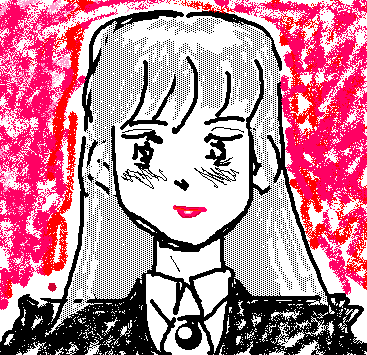

by WATARU 1024
一、あいつの妹
「なーに？ 何かご用ですか？」
思わず見とれていた、美少女が、オレに向かって声を掛けてきた。
交差点の信号待ちで、人混みから一歩離れて立っていたオレに向かって。視線に気づいたかと思うと目を合わせ、じっとオレの方を見たまま、二、三歩近づいて彼女はそう言った。
見とれる理由は二つあった。

身長はオレより少し低め、ということは女の子としては少し高めか。彼女の焦茶の長い髪は自然に風になびいて。少し細すぎる首の線を傾けて、彼女はオレの方を見ていた。吸い込まれそうな瞳だ。文句なしの美少女だ。ただ、オレには、この手の顔に見覚えがあった。四年前と同じ顔。小学校の卒業式の頃。でもそんなはずはないわけで…。
幕間１
「ただいまー」
「あ、兄貴おかえり」
玄関を開けると、いきなり弟が出迎えた。この春中学に入ったばかりのガキだ。どうせたまたま、ここに居ただけのことだろうが、挨拶は気前がいい。
そう言えば、カヲルがいなくなった頃というのは、丁度、オレ達がこいつくらいの時だったんだな。
「おう。…優、おまえなぁ、オレの幼なじみのカヲル、早坂カヲル、憶えてるか？」
「えーと、あー、カヲルにいちゃん。うん憶えてる。凶暴な兄貴からよく助けてくれたもんな。オレにとっては恩人だね」
生意気言ってやがる。そういえば、親にひいきされるこいつを、陰で思いっきりイジメてやろうとすると、きまってカヲルに止められたっけ。ま、大したことじゃなかったんだけど、こいつにしてみれば大恩人て訳か。
「今日その双子の妹ってのに会ったぞ」
「あれ、カヲルにいちゃんて双子だったの？」
「ああ、驚いたけどな。で、その妹っていうのが、すごく可愛いんだな…」
顔が思わずにやけていた。
夕食後、小学校の卒業アルバムを見てみた。自分の顔が、今と全然違うのが何となく可笑しい。
オレってこんな顔してたんだな。
ついで本来の目的である早坂カヲルを見る。と、写真の少年は記憶の中のカヲルよりも、ずっと幼い感じに写っていた。久しぶりに写真を見たのだから、記憶が曖昧なのはしょうがないが、これはちょっと意外だった。記憶の中では、カヲルはもっと大人っぽい少年だった筈だ。それはあくまで、同級生の眼から見たカヲルの姿だったのだろうか。
今日出会ったカヲルの双子の妹の姿は、記憶にあった小学生の男の子にそっくりだった。なのに実際のその頃の写真を見ると、彼女がもっとずっと大人っぽかったことが解る。
多分無意識のうちに、オレは頭の中のカヲルを自分に合わせて少し成長させていたのだろう。そして彼女はそのイメージにそっくりだったと言うわけだ。オレのように代わっていたら、解らなかっただろう。オレの中で、カヲルがそのまま少し成長したらこんな感じではなかったかと、そう想像した姿に彼女はそっくりだった訳だ。しかしこれはきっと、彼女が女の子だったからだ。兄の方のカヲルは、もっと別の大人っぽい顔になっているに違いない。オレ自身がこうなっていることを思うと、あいつもそれなりにむさくるしくなっているのだろう。
それはちょっと、いやかなり想像しづらいことだけれど。